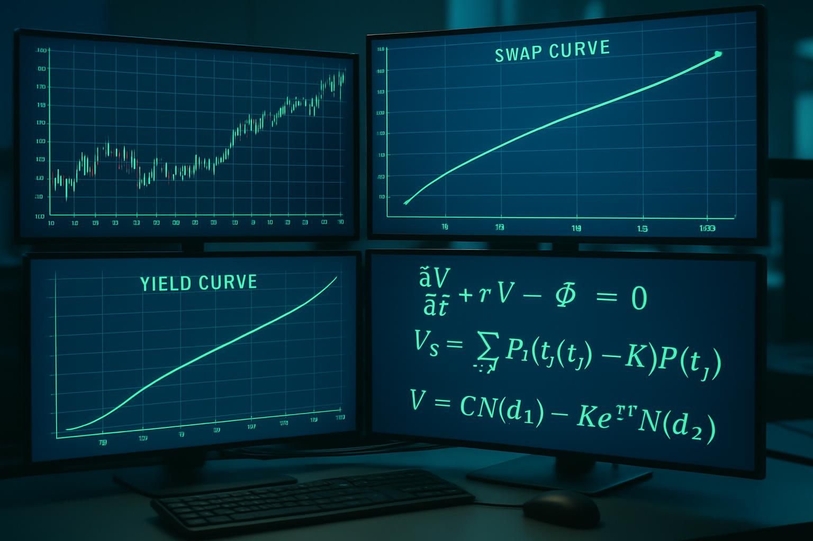

Start Learning Today
Enroll instantly on Udemy or dive deeper on our dedicated landing pages. Courses cover FRTB, interest rate derivatives, MBS/ABS, and XVA with practical examples from 30+ years of capital markets experience.

25% OFFThe Definitive Course for Finance Professionals
Comprehensive training on swaps, curves, caps, floors, and swaptions from industry experts with real-world trading floor experience.
From the Basics to Advanced Analytics and 3rd Party Tools
From fundamentals to advanced concepts in securitizing, trading, and investing in mortgage and asset-backed securities.
Comprehensive Training for Banking Professionals
Master the Fundamental Review of the Trading Book with expert guidance on market risk capital rules, standardized approach, and internal models.
CVA, DVA, FVA, MVA, KVA Explained
Graduate-level overview of valuation adjustments, funding costs, and capital impacts with interactive modules and glossary support.
Learn how valuation adjustments (CVA, DVA, FVA, MVA, KVA) reshape modern derivatives pricing and risk management. This free, hosted learning experience combines focused lectures, clear examples, and interactive materials designed to make complex XVA concepts intuitive and practical. Understand why traditional risk-neutral pricing is no longer enough—and how XVA impacts every trade, portfolio, and funding decision.
Click through and explore the lecture portal in your browser.
Explore our open source applications built with modern web technologies.
A lightweight chat app combining React/Vite and Python Flask for real-time AI conversations via SSE.
VisitGenerates value-selling pitches with a React front-end and FastAPI backend using OpenAI.
VisitReal-time dashboard for tracking stocks, crypto, and economic indicators in one place.
VisitOur flagship financial engine provides easy-to-use but rigorous analytics for retail and professional investors. Built with Django, JavaScript, and QuantLib, it features a 100% Python backend to execute bank-level analytics including Value-at-Risk measures and scenario analysis.
Learn More About Value-at-RiskWe try to be innovative. Our mission is to provide cutting-edge financial education and open-source technology tools for both retail and professional investors.
With over 30 years of experience in capital markets across New York, London, and Paris, our founder Tim Glauner brings unparalleled expertise as a Wall Street quant with a strong NY professional career, specializing in quantitative finance, regulatory frameworks, and structured products.
Our founder is also an alumnus of the Courant Institute of Mathematical Sciences at New York University and the Technical University of Karlsruhe, further solidifying our commitment to rigorous quantitative approaches.
Deep knowledge of Basel III, FRTB, and other critical regulatory frameworks essential for modern banking.
Real-world trading floor experience in derivatives, structured products, and risk management.
Advanced mathematical modeling and programming expertise with Python, Excel, and industry tools.
Open Source
Public repositories and descriptions pulled live from Github.
Loading repositories...
Model Context Protocol
Under constructionCurrently in active development. The public MCP server exposes Tim Glauner's profile as a tool and resource for MCP-enabled assistants and apps.
Streamable HTTP MCP endpoint with read-only profile data for quick, structured context.
profile returns a summary plus JSON.profile.json returns Schema.org Person data./mcp.Point any MCP client at the endpoint below. For a quick test, use the MCP Inspector.
https://mcp.tglauner.com/mcp
npx -y @modelcontextprotocol/inspector https://mcp.tglauner.com/mcp